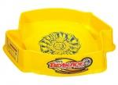

Pegasus Thunder Whip Stadium
| Pegasus Thunder Whip Stadium | |
|  | |
| Number: | None |
|---|---|
| System: | Metal Fight Beyblade |
Dimensions
Widest Diameter: 49 cm
Shortest Diameter: 36 cm
Widest diameter without pockets: 46 cm
Tornado Ridge Diameter: 25.7 cm
Depth: 2 cm
Pocket Depth: 2 cm
Wall Height: 6.7 to 7 cm
Slope: ~20°
Available Products
- Pegasus Thunder Whip Stadium (yellow)
- Pegasus Thunder Whip Stadium (blue)
Gallery
-
Pegasus Thunder Whip Stadium (blue)
Overall
This Stadium set the base for the vast majority of the Stadiums released by Hasbro for the main Beyblade: Metal Fusion and Metal Masters line. Indeed, almost all of the others are simply copies of the Pegasus Thunder Whip arena's design, save for a few subtle alterations of slope or additional gimmicks.
It consists of a normal, mostly round playing area bordered by a small Tornado Ridge, which is molded within an odd, diamond shaped outer area with two smaller, irregular pentagonal pockets on either side, closed off by only very short ridges. The wider faces of these pockets are open to counter-clockwise travelling (i.e. right spin) Beyblades. The entire stadium is surrounded by high walls tightly marking the edges, leaving no exits, with the pockets typically being considered a substitute out-of-play area, though this fails to compensate due to the poor wall-to-exit ratio and the ease by which Beyblades bounce back out of them. In addition, the orientation of the pockets favours Self-Knock Outs by right spin Beyblades, with left spin Beyblades having a significantly smaller opening to enter through their own movement.
The Pegasus Thunder Whip is available in both bright yellow and blue, with swirl designs of the other color drawn in the middle representing an extension of the Pegasis Face Mark.
The whole play area is considerably flatter than most of TAKARA-TOMY's BeyStadiums, making it much more difficult for Attack types to pass through the center of the stadium even when launching techniques such as the Sliding Shoot are used, severely reducing their ability to make contact with opponents. In addition to this, the relatively short Tornado Ridge does not provide enough resistance to catch mobile Beyblades, meaning obtaining a tight flower pattern is incredibly difficult. As such, real Knock Outs in the pockets by pure Attackers barely happen in this stadium, and the few opportunities where Beyblades are sent in those spaces are either a result of chance, excessive Recoil, or self KOs due to there being insufficient resistance to prevent slipping into the pockets.
Hasbro also uses thick paint to cover the stadium's surface, which easily sticks on all Bottoms, dirtying them and affecting their performance afterwards, sometimes even permanently.
Using Attack-type combinations which were top-tier when the stadium was released against a Stamina type of the same era which is easily and reliably knocked out by them in TAKARA-TOMY's BeyStadium Attack Type helps to illustrate the clear discrepancy of this Stadium and its extreme unfairness towards Attack types in general:
Comparative Results (conducted by Kai-V)
MF Flash Sagittario II S130RF vs. Duo Uranus 230SD
- Pegasus Thunder Whip Stadium
- Attack type always shot first
- Beylauncher and Launcher Grip
- 15 Battles
Results:
- MF Flash Sagittario II S130RF: 5 wins
- Duo Uranus 230SD: 10 wins
- Flash win percentage: 33.33%
MF Flash Sagittario II S130RF vs. Duo Uranus 230SD
- BeyStadium Attack Type
- Attack type always shot first
- Beylauncher and Launcher Grip
- 15 Battles
Results:
- MF Flash Sagittario II S130RF: 12 wins
- Duo Uranus 230SD: 3 wins
- Flash win percentage: 80%
Customization Advice
Any mid to low height Stamina customization should do well in this stadium. Defense types are not particularly useful as the Attack combinations they aim to counter are already foiled by the stadium design, therefore most battles come down to pure Survival. Stamina combinations such as Phantom Cancer AD145/100SD/WD and Hell Kerbecs BD145WD are consequently given an advantage.
Conclusion
The complete lack of exits, the absence of a decent slope, the odd shape of the pockets and their ineffective performance, as well as the paint coating combos' tips are all reasons that make this stadium extremely unfair towards Attack Types, which, as explained above, results in a Stamina-dominated metagame. Since it does not give all types a fair chance to shine, this stadium is considered unquestionably illegal for World Beyblade Organization tournaments, and due to this and its effects on the tips of Beyblades, it should not be purchased for any reason.